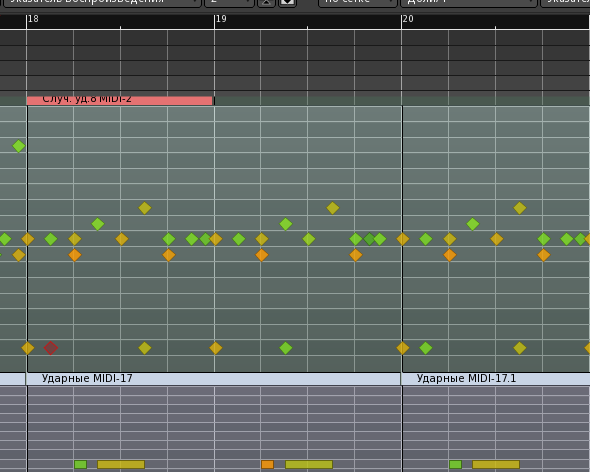

Под подкладом понимается фоновая партия с мягким, приятным тембром с медленной атакой и затуханием. Наиболее хорошо звучит, играя плавные аккорды, создающие контраст с аккомпанементом, который в электронной музыке бывает довольно агрессивен. В общем, подклад создаёт атмосферу и похож на струнные в оркестре. Играть он должен не всегда, а только в отдельные периоды трека, иначе вся композиция выйдет чересчур слащавой.
Будем использовать, без преувеличения, самый известный синтезатор для Linux под названием ZynAddSubFX. Его архитектура позволяет синтезировать широкий спектр разнообразных красивых звуков. Есть много пресетов к нему, как встроенных, так и дополнительных, которые можно скачать, например, на KVR.
Создадим MIDI-дорожку Подклад MIDI и группу Подклады, потому что, наверняка, их будет несколько. Выход подключим к шине Подклады. Не забываем отправить на неё MIDI с MIDI-входа комнаты Claudia. Включим мониторинг входа, чтобы можно было играть из Rosegarden или с MIDI-клавиатуры одновременно с воспроизведением. Добавляем фильтр каналов (второй) можно назначить в самом синтезаторе, выбираем его в диалоге выбора каналов дорожки.
Окно банков пресетов вызывается щелчком на названии пресета над выпадающим меню каналов. Используем Trance Strings Pad из банка the_mysterious_bank.
Поставим синхронизацию на JACK и переключимся в Rosegarden. Переименовываем вторую дорожку в Подклад, глушим все дорожки, кроме этой. В параметрах инструментов не забываем снять галочки с банка и программы. Попробуем сыграть что-нибудь гармоничное двойными целыми (бревисами) по второму каналу.
Обратим внимание, как тембр меняется от силы нажатия. Запишем партию и подредактируем, проследив, чтобы не было прыжков больше пяти полутонов в каждом из голосов и подъемов с субдоминанты на доминанту. Если такое случается, можно сделать лесенку через какую-нибудь другую ноту, например, через третью ступень (как в 7-м такте в басу и в 15-м такте в верхнем голосе).
Фраза завершается доминантой (ми), поэтому звучит неоконченной. Придётся добавить ещё 16 тактов, чтобы разрешить фразу в тонику. В добавлении повторим первые восемь тактов с более ярким тембром, а дальше попытаемся как-нибудь окончить всё это нотой ля.

Запишем подклад в Ardour и удвоим там наши 16 тактов ударных и баса. Отключим мониторинг входа на Подклад MIDI. Зациклив, вслушаемся в то, что получилось.
Бас у нас слишком мелодичный. Акцент на первой ступени теперь звучит чересчур нахально, с ним надо что-то делать. Исправим переносом этих нот на тонику. Кроме того, придётся опустить на полтона и ноту, заигрывавшую с доминантой. Мелодический рисунок получился более плоским, зато бас теперь не высовывается из подклада.
Требуют исправления и ударные. Сбивка встречается слишком часто. Удалим нечётные регионы со сбивкой (такты 8-10, 24-26) и заменим их регионом с рабочим ритмом. Так же поступим и с басом в соответствующих регионах.
Вообще, не помешала бы небольшая вариация в ударных. Заменим снейр во второй половине - другой как раз есть в сбивке и звучит там, будто вступление. Но если просто перетащить ноту, она изменится везде, потому что регионы являются связанными копиями. Нужно один из них отвязать. Это делается командой контекстного меню региона MIDI/Отсоединить от других копий. После этого перетащим ноты снейра: как видим в соседних регионах изменений не происходит.
Немного изменим и ритмический рисунок бочки, затем выделим и удалим все регионы справа от изменённого на дорожке Ударные MIDI, заменим его копиями.
